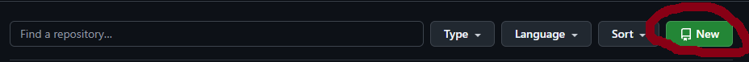
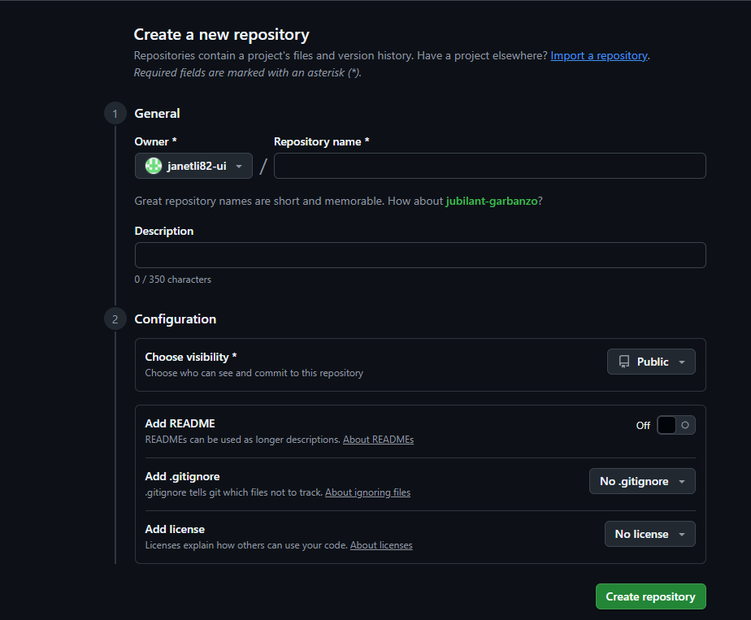
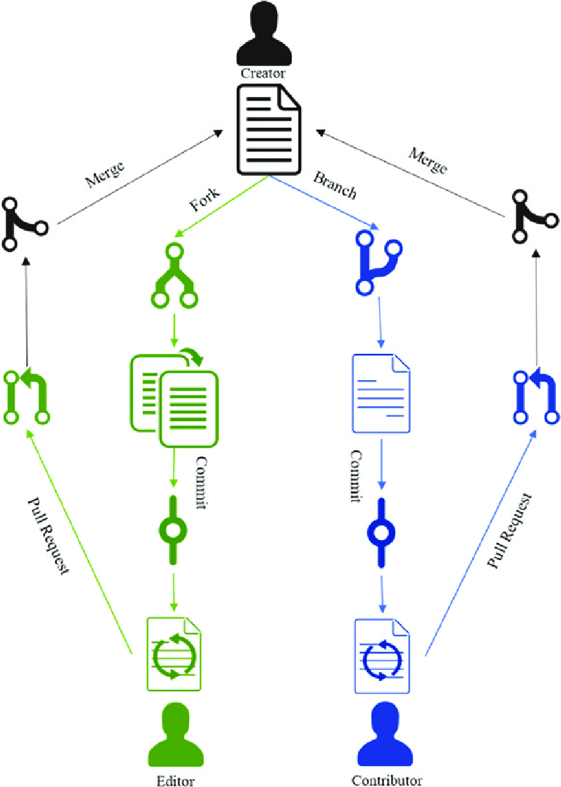

Projects
Why remote repositories are necessary
Remote repositories are essential for facilitating team collaboration by providing a central, shared location for code, allowing developers to push their changes and pull updates from others, and serving as a critical backup to prevent data loss from local machine failures. They act as a synchronization point for multiple developers working on the same project, enabling features like pull requests, code reviews, and issue tracking, which are vital for modern software development.
How to create a project on Github
Go to your GitHub account and select New repository.Give it a name and then choose public. A public repo is available to anyone to see and collaborate. Don't worry about adding a Readme or a License just yet! Once the repository is created in GitHub, you need to connect your local code to the repo. Follow the instructions on GitHub to do this.
 Git commands:
- Setup & Initialization
- mkdir folder branch-name
- git init
- Workflow Commands
- git status
- git add./git add *.html
- git commit -m "Commit message"
- git log --oneline --graph --all
- Branching & Merging
- git branch
- git checkout -b new-branch
- git checkout branch-name
- git merge branch-name
- Remote repository Operations
- git push origin main
- git pull origin main
How other people can contribute to the project
Fork the project. Create a topic branch from main . Make some commits to improve the project. Push this branch to your GitHub project. Open a Pull Request on GitHub. Discuss, and optionally continue committing. The project owner merges or closes the Pull Request.
